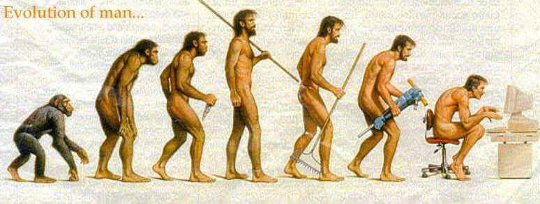

A New Hominid: Homo Compensatorus
"Sweet are the uses of adversity."
homo erectus ––> homo sapiens ––> homo compensatorus

Has the human species stopped evolving? There is a general consensus among biologists that man is no longer evolving physically for the simple reason that there are no evolutionary pressures for him to do so; examples of human genomic evolution sited by some experts, such as the prevalence of sickle cell anemia among blacks and the inability of some non-European populations to digest milk in adulthood, rather prove the absence of selective forces in modern man's environment, for these are disorders that are theoretically manageable by modern medical technology, like gene therapy, rather than eliminated by natural selection. It is our technology that has become the medium of evolutionary change.
Is man then, perhaps, evolving spiritually? Progressive thinkers would have us think so, speculating that the universe is unfinished and that man has the potential for spiritual evolution. But you have only to read the newspapers to know mankind remains stubbornly depraved.
Yet surely man has changed. How? According to McLuhan he has been in a state of constant change for 2,500 years, gradually relinquishing his primordial innocence to become the unwitting servo-mechanism of his own tools. This necessarily involves a process called 'homeostasis,' or compensatory change, e.g. offsetting the bias of literacy with the bias of electronic communication. In short, man unconsciously compensates for the internalization of one technology by internalizing another; so it makes perfect sense to call such a species, homo compensatorus. The changes are mental and learned rather than inherited, i.e. man, who has become the author of his own universe, is evolving socially via his tools, and since he becomes the tools he uses, he is evolving psychologically into a species that is performing a continuous balancing act, counterpoising one sensibility with another. Today literate man is quickly evolving into electric man.
Western man at least, is a different species than he was three millennia ago, for he is born into a man-made environment rather than the natural one that eliminated such stone age societies as Neanderthal man. He has evolved to adapt to new social conditions of his own making rather than those imposed upon him by the natural world. While this has not resulted in any alteration in his DNA that we know of, the psychological shift has been profound. Continuously adapting, homo sapiens has perforce become homo compensatorus—man, the juggler, who balances, counterbalances.